DOI PDF Video Video
Slides


FoldTronics: Creating 3D Objects with Integrated Electronics Using Foldable Honeycomb Structures
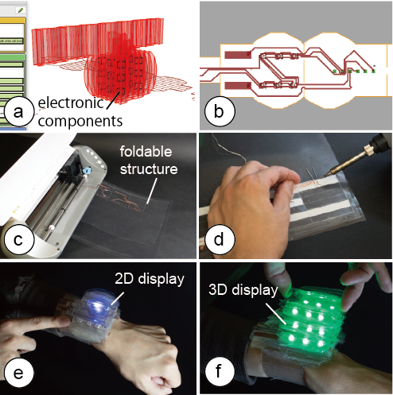
Figure 1: FoldTronics creates 3D objects with integrated electronics. Our design software allows users to: (a) Convert a 3D model into a honeycomb structure & place electronic components into it. (b) Export the 2D layers (honeycomb pattern, wiring, insulation). (c) Fabricate the layers on a cutting plotter using sheets of plastic, copper, and regular tape. (d) After soldering and folding, the object is ready to be used: (e, f) This smart watch has a 2D display when collapsed and a 3D volumetric display (3 layers, 6 LEDs each) when expanded – the LEDs and wiring are integrated inside the object.
We present FoldTronics, a 2D-cutting based fabrication technique to integrate electronics into 3D folded objects. The key idea is to cut and perforate a 2D sheet to make it foldable into a honeycomb structure using a cutting plotter; before folding the sheet into a 3D structure, users place the electronic components and circuitry onto the sheet.
The fabrication process only takes a few minutes enabling users to rapidly prototype functional interactive devices. The resulting objects are lightweight and rigid, thus allowing for weight-sensitive and force-sensitive applications. Finally, due to the nature of the honeycomb structure, the objects can be folded flat along one axis and thus can be efficiently transported in this compact form factor.
We describe the structure of the foldable sheet, and present a design tool that enables users to quickly prototype the desired objects. We showcase a range of examples made with our design tool, including objects with integrated sensors and display elements.
Introduction
While many of today’s fabrication processes allow users to fabricate passive 3D objects, fabricating 3D objects with integrated electronics that allow for interactive applications remains challenging [2]. For instance, while it is now possible to 3D print the wires of a circuit using silver ink (e.g., Voxel8), there is only little progress in fabricating the actual electronic components themselves (see Lewis et al. for a first approach to 3D print an LED [19]).
Since 3D printing is not yet at a level to make fully functional objects, researchers are looking into alternative fabrication methods. For instance, ObjectSkin [12] dips the object into a water bath with a film that contains circuitry; ActMold [40] places electronic circuitry onto a plastic sheet prior to draw-forming a 3D structure from it, and Foldio [27] prints circuitry onto a 2D sheet that the user can cut and fold. However, those methods only apply electronics to the surface of an object.
Recently, PEP [26] showed how to integrate electronics into the inside of 3D objects by cutting and stacking paper sheets that were previously enhanced with electronic components. However, since PEP fabricates objects by stacking paper sheets, the approach is limited to thin-film electronics, such as flat coils and RFID tags, that do not interfere with the stacking process. In addition, the resulting objects are solid inside, making it difficult to apply the approach to lightweight and portable applications.
In this paper, we take a different approach: Inspired by existing methods that fold passive 2D sheets into honeycomb structures [32] to create rigid and lightweight objects, we propose a new fabrication technique that combines honeycomb structures with integrated electronics (Figure 1). Our method goes beyond existing origami-electronics applications (e.g., origami robot [9] & antenna [42]) by providing a fabrication pipeline supported by a design tool that facilitates the creation of interactive objects. Users only have to use a regular cutting plotter to cut the 2D sheets into a specific pattern, add the electronic components, and then fold the structure into its final 3D shape.
Basics of Interactive Honeycomb Structures
For our method, we employ a standard kirigami honeycomb cutting and folding method [32]. We will briefly describe how this works and how we extend it to integrate electronics.
Basic Folding Principle
Figure 2 illustrates how we can fold honeycomb cells by cutting and folding paper.
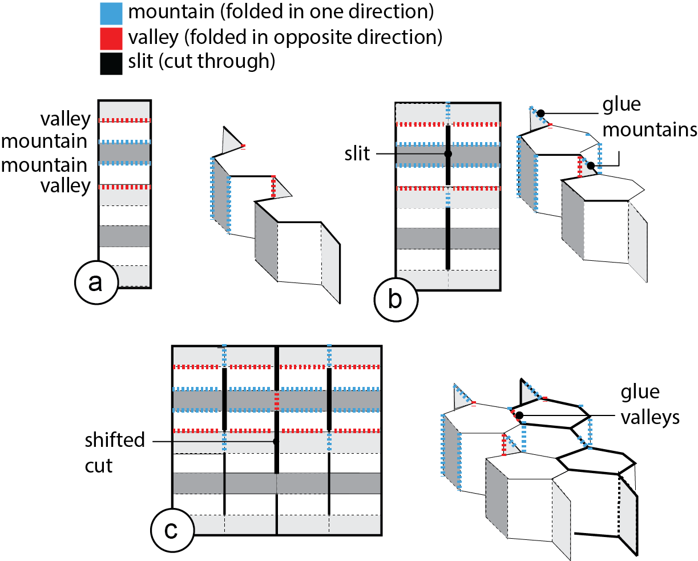
Figure 2: Folding honeycomb structures: (a) half a column of cells, (b) column of cells, (c) multiple columns.
Creating half a cell column: Each column of honeycomb cells consists of mountains and valleys. Mountains are lines that are bent in one direction, valleys are lines that are bent in the opposing direction. This causes the strip to fold into its characteristic shape. Figure 2a shows the strip pattern to create half a cell column from mountains and valleys.
Creating a full cell column: To create both sides of a honeycomb cell column, we duplicate the previously described pattern (Figure 2b). The center line connecting the two half-columns needs to be designed as follows: A slit is placed along all center line segments that do not connect to two valleys (they will form the hollow cell), all line segments connecting two valleys use a mountain line (they form glue surfaces that will hold the structure together after folding, see Figure 2b).
Creating multiple cell columns: Finally, to create a second cell column, we can use the cutting pattern shown in Figure Figure 2c. Again, we duplicate the pattern from the previous image and place it right next to the existing structure. In addition, where the two cell columns meet, we now place slits whenever the center line segments do not connect to two mountains (to form the hollow cells between the two columns, see the hollow cell in Figure 2c). All line segments that do connect to two mountains now use a valley line (they form the glue surfaces that hold the two columns together). To create more than two columns, we can repeat this pattern as many times as required. Cell Size: The size of the cell determines the resolution of the honeycomb structure (Figure 3). This is not only important to represent the original shape of the 3D object as accurately as possible, but also for the placement and wiring of electronic components: Since the electronic components are placed inside the cells (Figure 3b), the cells need to have at least the same size as the components. Similarly, since the wires are placed alongside the walls of the cells, the larger the cell, the more wires can be routed to an electronic component. Thus, there is a trade-off between honeycomb resolution and size of electronic components. Smaller electronic components work better since they allow for a higher resolution. Each cell can also house multiple electronic components as long as they fit inside the cell.
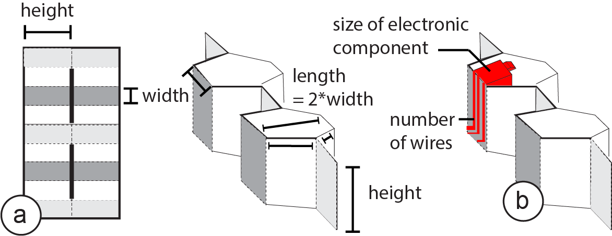
Figure 3: (a) The cell size (length, width, height) determines (b) the size of the electronic components and numbers of wires that can be placed.
Placing Electronic Components
When folding the honeycomb, some cells are formed from the top side of the sheet while others are formed from the bottom side of the sheet. Since we only support one-sided circuit boards, we can only place electronic components into those cells made from the top of the sheet (Figure 4).
In addition, electronic components can only be placed onto surfaces that are not being glued together. On the top side of the sheet, the mountain surfaces become glued and thus cannot be used for placing electronic components (see crossed out side faces in Figure 4b).
In our design tool, we highlight which cells can be used for placing electronic components. For instance, users receive a warning when placing a component as shown in Figure 4b since the component is housed in an invalid cell made from the bottom of the sheet and the wiring is on a mountain surface that would be glued when folded.
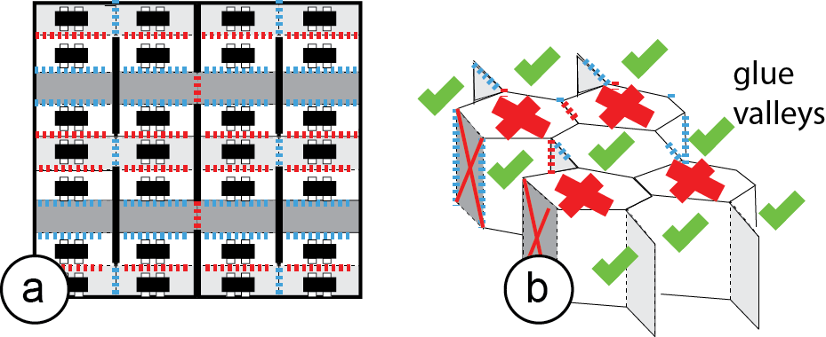
Figure 4: (a) Electronic components can only be placed on the surfaces that are not being glued, and (b) only into cells that are formed from the top of the sheet.
Circuit Layout on Honeycomb Foldable Structures
Finally, the wires to connect the electronic components can be placed onto any surface that is also suitable for an electronic component (i.e., it is neither on the back of the sheet nor being glued together). We prevent short circuiting of wires as a result of folding by adding an insulating sheet in a later step of the pipeline (see section "fabrication process"). Cross-Cell Circuit Connector: As mentioned previously, the cell size determines how many wires can be routed to a cell. For example, as shown in Figure 5a, when the width of a cell is 7mm and the width of the wire is 1mm,only 4wires can reach a cell since we also need to leave a 1mm gap between each wire. To allow for more wires, we created the wiring method shown in Figure 5b: This wiring method leverages the fact that after folding, the mountains will be connected since they are being glued together. When the mountains become glued, seemingly unconnected wires become connected and the circuit is closed. Figure 5 shows the results: rather than (a) just 4 wires, our new method (b) allows for 8 wires. However, while regular wiring can be placed on any surface, our cross-cell circuit connector only works on mountains since other surfaces do not become glued together.
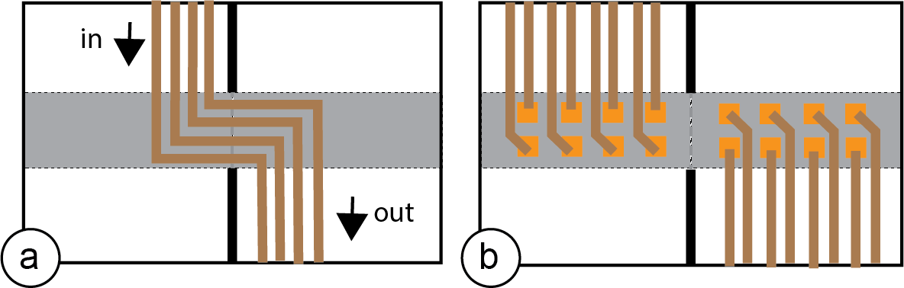
Figure 5: (a) Traditional wiring method. (b) Our new wiring allows for more wires due to folding.
FoldTronics Pipeline
Next, we describe how users can create interactive objects with integrated electronics using the FoldTronics design software and fabrication pipeline. We will illustrate all steps at the example of making a simple LED circuit with one cross-cell circuit connector and a battery. We chose this simple example for the step-by-step illustration and will demonstrate more complex use cases in section "Scenarios."
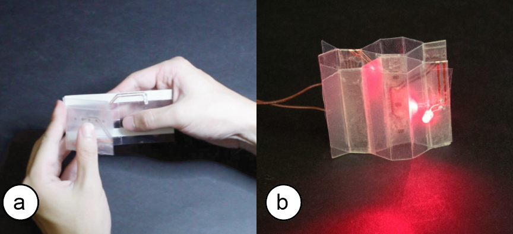
Figure 6: (a, b) Walk-through example: functional LED circuit with one cross-cell circuit connector and a battery.
Creating interactive foldable 3D objects, such as the functional LED circuit with battery, requires three steps:
(1) Device Design: Users start by 3D modeling their device, then convert the 3D model into a foldable honeycomb structure using our conversion software, and place the electronics onto the cells facilitated by our software’s guidance tools.
(2) Export for Fabrication: Next, users export their design for fabrication on a regular cutting plotter. All layers are exported "fabrication-ready" except for the wiring layer, which requires users to open it in the electronics design software EAGLE to use its auto-wiring function.
(3) Fabrication & Assembly: Finally, users use the cutting plotter to fabricate the different layers, then solder on the electronics and fold the shape into its 3D structure.
The software for our design tool can be found on GitHub. A full list of materials and a step-by-step description of the process can also be found in our FoldTronics Instructables tutorial.
#1 Device Design using FoldTronics User Interface
To create the LED circuit, we start by creating a 3D model in the 3D editor Rhino3D for which we implemented our FoldTronics plugin (Figure 7a). After creating the basic shape of the 3D model, we convert it into a honeycomb structure by pressing the "convert" button. As soon as the algorithm split the model into the honeycomb cells, the result is displayed in the 3D view (Figure 7b).
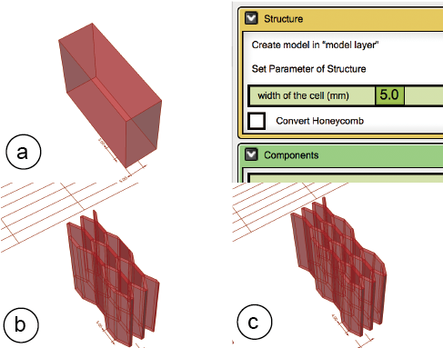
Figure 7: (a) Converting the 3D model into (b, c) honeycombs with different resolutions.
We can now vary the resolution of the honeycomb using the provided slider to find the best trade-off between higher resolution and having enough space in the cells to house the LED, the battery, and the cross-cell circuit connector. Figure 7b/c show different resolutions (5mm vs. 4mm for the width of the cells) for this purpose. The resolution slider changes both the number of columns and the number of cells simultaneously because changing the resolution for columns and rows separately would cause the final shape to differ from the original shape.
To add the LED, battery, and cross-cell circuit connector, we select them from the list of components from the menu and add them by clicking the respective button (Figure 8a). This automatically creates a 3D model of a box representing the size of the selected electronic component (Figure 8b). We can now drag the LED and other electronic components to a location in the 3D volume. In case we accidentally place a component onto a fold or a non-valid cell, it is automatically relocated to the next valid cell (Figure 8b).
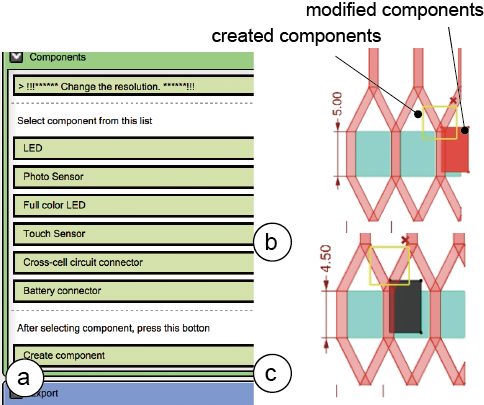
Figure 8: (a) Adding electronic components from the menu, (b) relocating components to valid cells, (c) color-coding components that are too large.
If the width of the electronic component, such as the LED, is too large (i.e., larger than the width of the cell), the color of the electronic component changes to black and a warning is displayed on the menu (Figure 8c).
We are done with placing the components. Before exporting, we use the "Collapsing Simulation" slider to preview how the design will look when compressed and expanded again.
#2 Export for Fabrication
Once we are done with placing the electronic components, we hit the "export" button to generate the layers for fabrication. As can be seen in Figure 9, on export, our 3D editor plugin creates all layers of the fabrication stack as 2D drawing files (.DXF file format) except the layer that contains the wiring, which we will create now as a seperate step in the process.
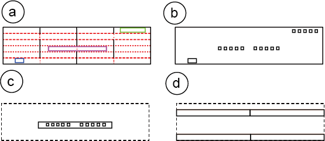
Figure 9: Individual layers generated using Grasshopper and EAGLE to create a honeycomb structure with integrated electronics.
To generate the missing wiring layer, users open the 2D file of the honeycomb structure in the electronic design software EAGLE and execute our custom EAGLE ULP plugin. As can be seen in Figure 10, the plugin (a) generates a circuit board the size of the honeycomb pattern and then converts each colored square back into an electronic component (i.e. the LED, battery, and cross-cell circuit connector). (b) With the electronic components already on the sheet, users can now build the schematic. (c) Finally, users can use EAGLE’s auto-wiring function to create the full circuitry on the sheet, and then export the design as .DXF file, which provides the last missing layer for fabrication.
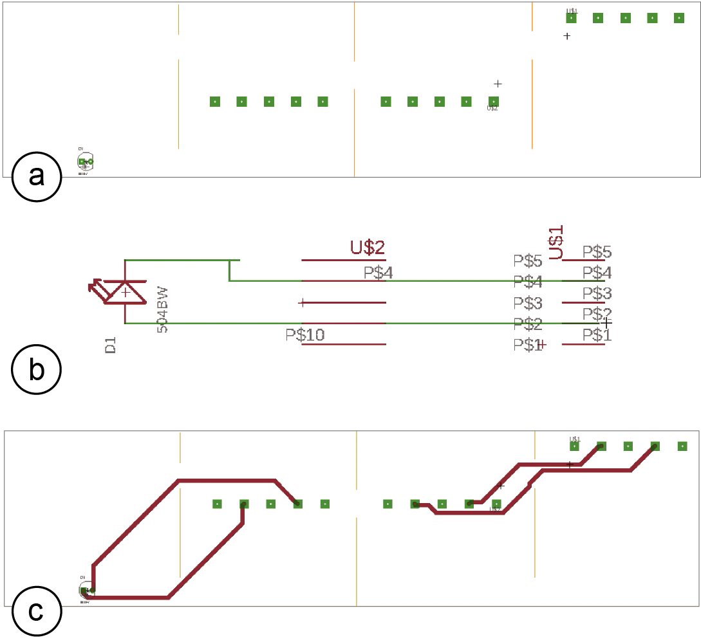
Figure 10: (a) Generated circuit board + colored squares converted to electronic components in EAGLE, (b) the user creates the logical connections, then (c) uses EAGLE’s auto-wiring to create the circuit.
#3 Fabrication & Assembly
To fabricate the layers, we only have to cut the 2D drawing of each layer (.DXF file format) in the right order using the cutting plotter. We use the FoldTronics settings sheet to set the cutting blade width, speed, and force for each layer.
Cutting / Perforating the Base Sheet: We first insert the base sheet (PET plastic) into the cutter and cut and perforate it to create the mountain, valley, and slit lines as well as the markers for the electronic components (Figure 11). The FoldTronics process only perforates the sheet from the top and differentiates between mountain and valley lines using separate visual notations (dotted lines for mountains vs. dashed lines for valleys) since they require folding into opposing directions later on (Figure 9a). Alternatively, the FoldTronics process can also perforate the sheet from both sides, i.e. perforate the mountains from the top and valleys from the bottom, however, this requires reinserting the sheet into the cutting plotter.
While all the slits are cut through, the outline of the honeycomb is only perforated to keep it connected to the main sheet, which allows us to further process the sheet with the cutting plotter in the next steps. Finally, the areas where electronic components will be soldered on are also perforated to make it easier to find out which component goes where.
For the objects used in this paper, we use PET plastic sheets, thickness 0.1mm and cut the sheets with a cutting plotter (model: Silhouette Portrait, settings cutting: blade 0.2mm, speed 2cm/s, force 10, settings perforating: blade 0.2mm, speed 2cm/s, force 5).
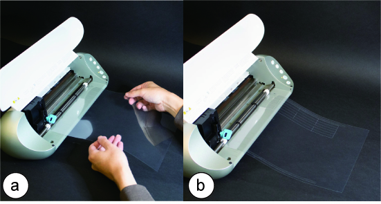
Figure 11: (a) Inserting the sheet into the plotter, (b) the cut & perforated honeycomb still connected to the sheet.
Placing the Wiring with Copper Tape: Next, we place a layer of one-sided copper tape (thickness: 0.07mm) across the entire sheet (Figure 12a). We put the sheet back into the cutting plotter with the copper side up, then execute the file to cut out the shape of the wires (Figure 9b) which is configured to make sure to not cut into the base sheet (cutting settings: blade 0.2mm, speed 2cm/s, force 13). Afterwards, we peel off the copper tape that is not part of the wiring (Figure 12b).
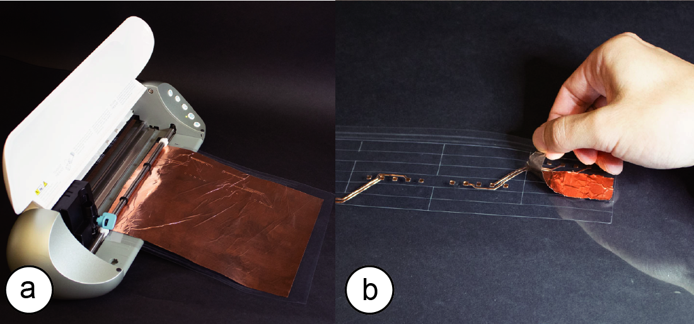
Figure 12: (a) Placing the copper sheet, (b) after cutting, we can peel the rest of the wires off.
Insulating Sheet: In order to prevent any short circuiting from wires touching after folding the base sheet, we next add an insulating layer (Figure 13a). For this, we place a layer of regular non-conductive tape across the entire sheet (thickness: 0.08mm). We put the sheet back into the cutting plotter, which removes the insulating tape only in those areas that have wire ends that either will be connected to electronic components or that use our novel cross cell circuit connector (Figure 13b) according to the drawing shown in Figure 9c. We use the cutting settings: blade 0.1mm, speed 2cm/s, force 4.
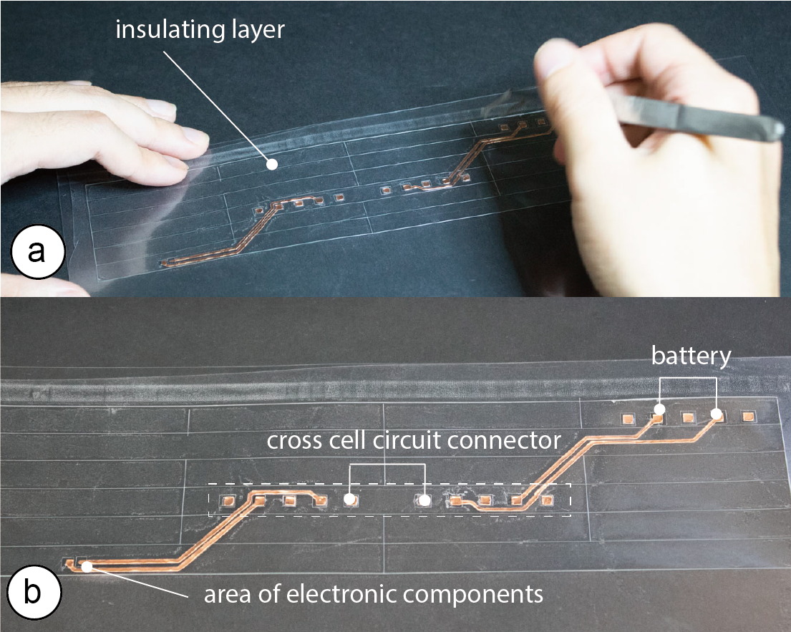
Figure 13: (a) Applying the insulating layer and cutting out areas for (b) electronic components, and the cross-cell circuit connector.
Glue mountains/valleys to hold after folding: In the next step, we apply a layer of regular double-sided tape to the sheet on both its bottom and its top (Figure 9d/e). The double-sided tape is used to connect the valleys and mountains that hold the honeycomb structure together after folding as was illustrated in Figure 2b/c (mountains get glued from the top of the sheets while valleys get glued from the bottom). After inserting the sheet into the cutting plotter, the double-sided tape is cut out in all areas that are not supposed to be taped together (cutting settings: blade 0.2mm, speed 2cm/s, force 6). In addition, for taped valleys/mountains that also carry a cross-cell circuit connector, the cutting plotter cuts out the areas needed for the electronic connections. After cutting both sides, we peel off the remaining double sided tape (Figure 14).
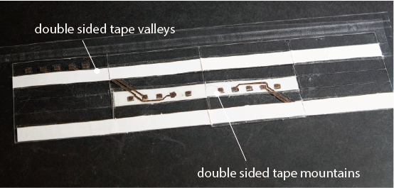
Figure 14: Applying regular double-sided tape on both sides for gluing mountains/valleys.
Soldering: In a final step before soldering, we now cut off the honeycomb pattern to disconnect it from the sheet. Next we solder the electronic components (LED, battery) onto the wires using a soldering iron. If the components are small and hard to solder, we can also use solder paste as an alternative. Since soldering the cross-cell circuit connector is difficult, we use double-sided conductive tape to create the connection.
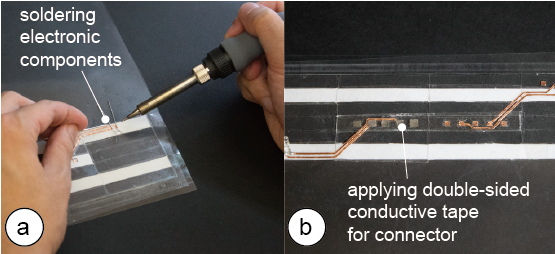
Figure 15: (a) Soldering electronic components. (b) Applying double-sided conductive tape for cross-cell circuit connector.
Folding: We now fold the honeycomb together (Figure 16). The total time for making this example, including all fabrication steps and folding was 18 minutes for us.
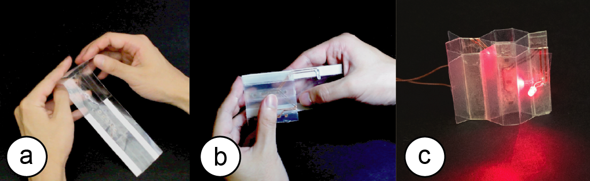
Figure 16: (a, b) Folding the honeycomb. (c) Assembled functional LED circuit.
The fabrication took 2 minutes for cutting the plastic sheet, 3 minutes for cutting the copper foil, 1 minute for cutting the insulating sheet, and 2 minutes total to cut the double-sided tape on each side. After fabricating all layers, it took us 10 minutes to assemble the structure. For less experienced users, the process will take longer. While assembly time is a limitation of our process since it scales linearly with the number of cells, our work enables functionality which cannot be achieved in other ways.
Scenarios
Next, we illustrate several scenarios that benefit from having integrated electronics in foldable honeycomb structures.
#1 Tube Case with Liquid Levels (Integrated Sensing)
Figure 17 shows a portable test tube case that can detect if tubes are inserted or removed, the type of liquid they contain, and the current liquid level. After measuring, the portable test-tube case displays the tube’s content quantity and color in real time on the user’s phone.
To allow for sensing inside the 3D structure, we placed three IR reflectance sensors per cell onto the 2D base sheet prior to folding the structure into its three-dimensional shape. Once folded, the sensors can detect a test tube inserted into one of the honeycomb cells.
Since we use a honeycomb structure, the test-tube case is portable, i.e. when users walk to the test site, they can easily store it in their pocket and expand it on site (thickness when collapsed 5mm vs. 45mm when expanded (9x)). In addition, since the honeycomb structure is hollow, the test-tube case is very lightweight and thus easy to carry around.
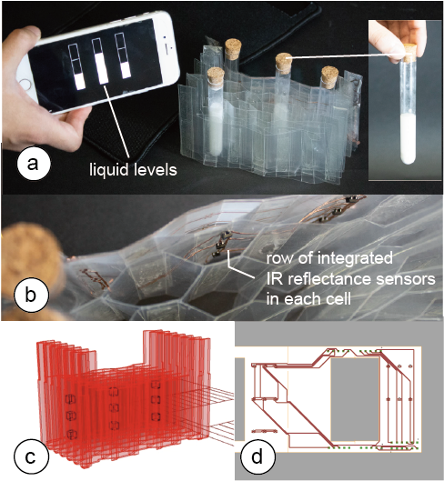
Figure 17: (a, b) Tube case with sensors. (c) 3D model data, (d) circuit layout.
#2 2D + 3D Smartwatch Display (Integrated Displays)
Figure 18 shows a prototype of a smart watch: (a) By default, the smart watch provides a regular 2D display (for simplicity of prototyping we use a display made from 2x3 LEDs). (b) However, when the user pulls the watch face upwards, the 2D display transforms into a volumetric 3D display for viewing additional content.
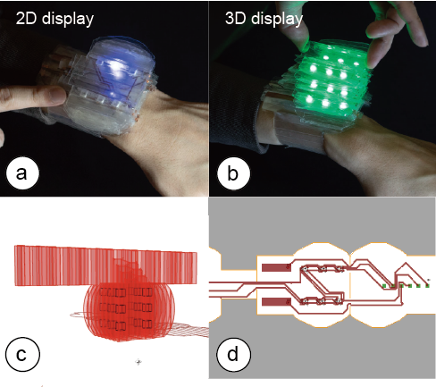
Figure 18: (a, b) Expandable smart watch. (c) 3D model data, (d) circuit layout.
While traditional fabrication approaches make it difficult to arrange LEDs inside a 3D structure, our method of folding a 2D sheet reduces the 3D placement problem to a 2D layout problem, which we can solve with our design software.
To detect when the display state changes from 2D to 3D and the additional LEDs need to be turned on, we also integrated a sensor that can detect when the display is in its flat 2D state. The key idea is to place conductive wires in a way that they touch when the display is compressed, and do not touch as the display gets expanded. We support this "touch sensor" in our design software as a separate electronic component.
In summary, this example made use of several benefits of the honeycomb structure: The 2D-to-3D folding facilitated the placement of the LEDs in the 3D volume, the capabilities of cells to expand and contract enabled the interaction of transforming the display, and since the honeycomb structure is sparse the resulting object was also very lightweight, which is especially important for wearable applications. More ways of extending screen space of such a folded smartwatch are shown by Fuchs et al. [10].
#3 Dynamic Game-Controller (Integrated Sensing)
Building onto the functionality explained above, we also build a game-controller that users can transform into different shapes to represent different game states, e.g., from a regular controller to a gun-shaped controller as shown in Figure 19. The controller includes two of the touch-buttons explained in the previous example: one touch button operates the controller and allows the user to shoot objects, whereas the other touch button detects the state of the game controller (when user compresses the controller to state 1, the touch button activates; when the user expands the controller, the touch button deactivates and we transform the controller to state 2).
In summary, foldable honeycomb structures with integrated electronics that enable interactive 3D objects are useful in a variety of scenarios ranging from mobile applications that require effective storage for transportation (scenario 1: mobile tube case) to deformable and shape-changing objects (scenario 2: smart watch as well as scenario 3: dynamic game controller).
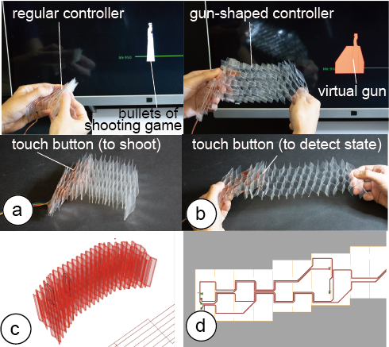
Figure 19: Shape changing controller. (c) 3D model data, (d) circuit layout.
Implementation / Code
Figure 20 shows a flowchart of our implementation pipeline. As mentioned previously, the main design tool is implemented in the 3D editor Rhino3D as a Grasshopper extension. Grasshopper directly exports the layers for the honeycomb sheet, insulating tape, and mountain/valley assembly. In addition, to generate the wiring, we implemented a ULP plugin to the electronic design software EAGLE, which exports the wiring layer – making the stack of layers complete.
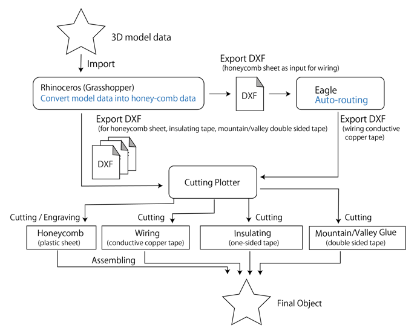
Figure 20: Flow chart of the system.
Layer #1: Converting the 3D Model into a 2D Structure
In the current version of our software, we can only convert a specific type of 3D model, i.e., shapes whose bottom and top are flat surfaces. There are no constraints on the other sides of the object, i.e. they can be slanted or curved or have an arbitrary shape (Figure 21).
Generating the Honeycomb Columns: We start the conversion process by splitting the model into 2D planes that will form the walls of the honeycomb cell (Figure 22a/b).
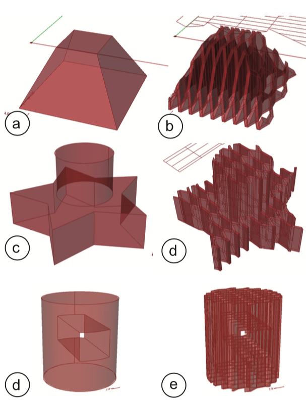
Figure 21: Examples of models our algorithm can convert.
To determine the position of each 2D plane, our algorithm first computes the bounding box of the model using Grasshopper’s DeBox() function and then divides the width of the bounding box by the number of slices (which the user set using the "resolution" slider). To generate each 2D plane, we now split the model with a large cutting plane at each plane’s position using Grasshoppers Brep() function (Figure 22b).
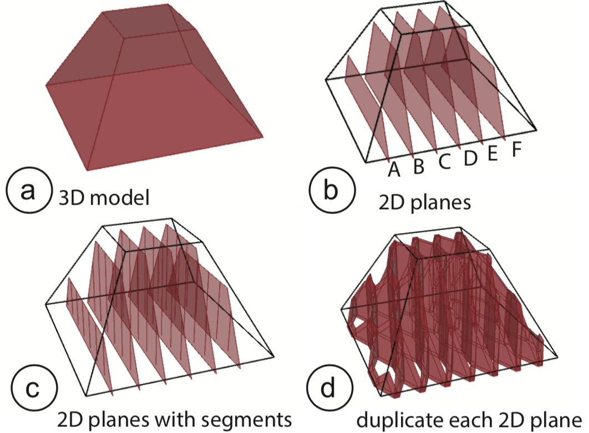
Figure 22: (a) 3D model, (b) splitting into honeycomb columns, and (c) cells. (d) Duplicating each column to form both sides of a cell.
Generating the Honeycomb Cell Segments: As can be seen in Figure 22c the next step is to split each 2D plane into the honeycomb cells segments, which will form the mountains and valleys. To find the position of each cell segment, we compute the bounding box of each 2D plane, compute its width, and then divide it by the cell resolution, which the user had previously set using the resolution slider. In the final step illustrated in Figure 22d, we duplicate each 2D plane and its cell segments to have one available for folding each of the connecting cells (see also Figure 23 for how this is represented in the final 2D layout).
Generating the 2D Layout: To convert the 2D planes with cell segments into a 2D drawing, we proceed as follows: First, we project each 2D plane onto the sheet starting with plane A, plane B, plane C and so on. When placing a 2D plane, we also have to create a duplicate vertically mirrored since each 2D plane is used for both the left and right connecting cell as mentioned previously (compare Figure 23 and Figure 22d).
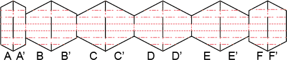
Figure 23: Converting the model from Figure 22 into a 2D layout.
After placing all planes and generating the line layout, we now determine which lines will be cut and which perforated.
For this, our algorithm iterates over the cells starting with the top left cell and processes all the cells in a column before moving to the next one. While going over the cells, our algorithm executes the layout that we explained at the beginning of this paper and that is shown in Figure 2c, i.e. our algorithm tags each line as either a mountain, a valley, a slit, or as part of the honeycomb outline. In the 2D drawing, all slits are colored black for cutting, all mountains and valley lines are colored red for engraving.
Placing Electronic Components: In addition, we also compute the position of electronic components on the 2D layout. For this, we identify which valley/mountain the electronic component is attached to and then identify that valley/mountain on the 2D sheet. We draw the outline of electronic component as a rectangle onto the 2D sheet in the respective position. Each electronic has a different color assigned to it (except red and black), which allows us to identify each component in EAGLE.
Layer #2: Wiring of Components with EAGLE
After the user imported the base-layer into EAGLE, our EAGLE User Language Program (ULP) plugin first generates a circuit board the size of the honeycomb pattern by parsing the .DXF file and going over the outside contour of the honeycomb using the coordinates in the file. Next, it converts the colored squares according to their color into matching electronic components. First, we extract the position of electronic components from the .DXF file, then load the matching electronic component from EAGLE’s component library using EAGLE’s add() function and provide the respective component ID as parameter. Using the generated board and electronic component, the user can now create the desired schematic and then use EAGLE’s standard auto-routing function to generate the wiring layout.
Layer #3: Insulating Layer
The insulating layer is exported from Grasshopper when the 2D honeycomb layout is generated. The insulating layer is simple in that it covers all cells except those that have an electronic component or a cross-cell circuit connector placed on them, which we can easily identify when we place the colored squares for the components on the sheet.
Layer #4: Valley/Mountain Glue Layer
Similarly, the valley/mountain glue layers that use double-sided tape to hold the honeycomb together are generated when Grasshopper generates the 2D honeycomb layout. Since this follows a pre-defined cell-pattern (see Figure 2c), we generate this layer when we are defining which cells are mountains and which valleys on the base layer.
Extensions For Honeycomb Circuits
Next, we describe extensions to our approach that allow for additional functionality.
Double-Sided Circuit
We can also create double-sided circuit boards by applying our fabrication process on both sides (wiring + insulating sheet). However, at this point our design software only supports one-sided boards and thus users would have to create the layout manually. If the user prints the circuit on the back side of the sheet, it is necessary to connect the circuit of the top side and the back side using eyelets (Figure 24).
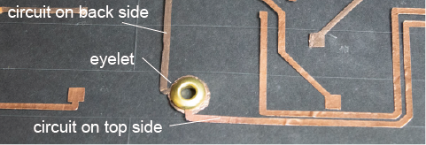
Figure 24: Double-sided circuit and connection.
Using Different Honeycomb Patterns
Beside the honeycomb pattern we used for this paper, there are other structures with different properties available. For instance, by using a different size for mountains than for valleys, we can create structures of negative Poisson’s ratio (NPR), which can be stretched in two directions [25]. With recent inventions in meta-materials, such structures could in the future even potentially be expanded to three-dimensional expansion and contraction [29]. Finally, by generating heterogeneous patterns, in a way similar to the ones shown in Hybrid Bricolage [8], we can generate honeycombs that better approximate an object’s geometry. Properties of irregular honeycomb structures have also been explored in computer graphics [15], mechanical engineering [20], and material science [43].
Stacking Multiple Honeycomb Structures
At the moment, we use a single layer of honeycomb structure only, which limits us to very simple shapes. However, moving forward we can stack multiple honeycomb layers on top of each other for more complex geometries.
Other Base-Sheet Materials: Opaque, Translucent etc.
For the objects illustrated in this paper, we used a transparent PET plastic sheet. However, other materials than PET can be used as the base as long as they comply with the maximum thickness of 0.8mm (thicker sheets are hard to cut and hard to fold). For example, by using a translucent plastic sheet we can diffuse the light of LEDs for a lamp, or by using a black plastic sheet we can conceal the internal parts. Similarly, paper can also be used for low cost prototyping.
Discussion
Finally, we will discuss our experiences while building honeycomb circuits over the course of several months. Conductive Inkjet Printing vs. Conductive Tape We initially considered the use of conductive inkjet printing to print the circuits directly onto the sheet rather than applying a layer of conductive tape and then peeling of the non-wire areas. However, conductive inkjet printing turned out to be not as reliable since the wire traces easily broke during folding. Conductive tape, in contrast, was robust enough to withstand folding over longer periods of time.
Robustness of Prototypes
We found that with respect to the robustness of the constructed circuitry, the weakest point are the wire traces. When the lines are thin (less than 1mm) and folded several hundred times, such as when expanding and contracting the transformable smart watch display, traces start to break. We can reduce this effect by using thicker wire traces. However, this results in fewer wires per cell. For the cross-cell circuit connector, solder paste helped eliminate these issues since it "glues" both sides together more reliably. However, the paste needs to be applied manually while the tape can be cut using the plotter. We also noticed that the blade of the cutting plotter gets dull over time. However, for the entire project, we only replaced the blade once ($9 per blade).
Debugging Folded Circuitry
During assembly, we found that debugging the circuitry was challenging once the circuit was folded into its 3D shape since the honeycomb-cells were glued/taped together and thus could not be easily unfolded again. To facilitate this, we envision a version of our fabrication process that uses hook-and-loop fasteners (both regular and conductive) instead of tape to connect the mountains/valleys. When debugging is required, the hook-and-loop fasteners allow users to pull the two surfaces apart to reveal the circuitry, diagnose the problem, and then re-connect the surfaces.
Learning Curve when Using Honeycomb Circuits
Most of the fabrication steps (e.g., applying tape and aligning sheets, automated cutting using the plotter) require little expertise and have limited complexity. Soldering is the hardest task but our target users (makers and other technical inventors with expertise in electronics and prototyping) tend to be familiar with this. The steps in the electronic design software EAGLE are not more difficult than for regular 2D electronics. The most error-prone step from our own experience is soldering the right components into the right place, which could be further improved by cutting visually distinguishable marks into the sheet at the correct locations. The cutting and layering could be further automated using layered-object manufacturing (automatically aligns, cuts, laminates layers) or a machine similar to the one used during the honeycomb manufacturing process shown in Wadley et al.
Conclusion
In this paper, we presented a novel fabrication technique that allows users to integrate electronic parts into foldable 3D structures. Since our technique is based on using a plotting cutter and a plastic sheet, users can create foldable prototypes fast and at low cost. To facilitate the design, we developed a layer-based fabrication method and developed software that automatically generates the required layers for folding, circuitry, and insulating. We demonstrated how our technique can create a variety of 3D objects with integrated functions, such as a smart-watch, a test tube case and a shape-changing controller. For future work, we plan to investigate how to reduce the number of layers required by using conductive inkjet printing for printing traces that are robust to folding. In addition, we plan to automate the folding process using a feeder and a folding machine . We also plan to develop a circuit layout algorithm that avoids potential short circuiting when folding which would allow us to reduce the need for having an insulating sheet.